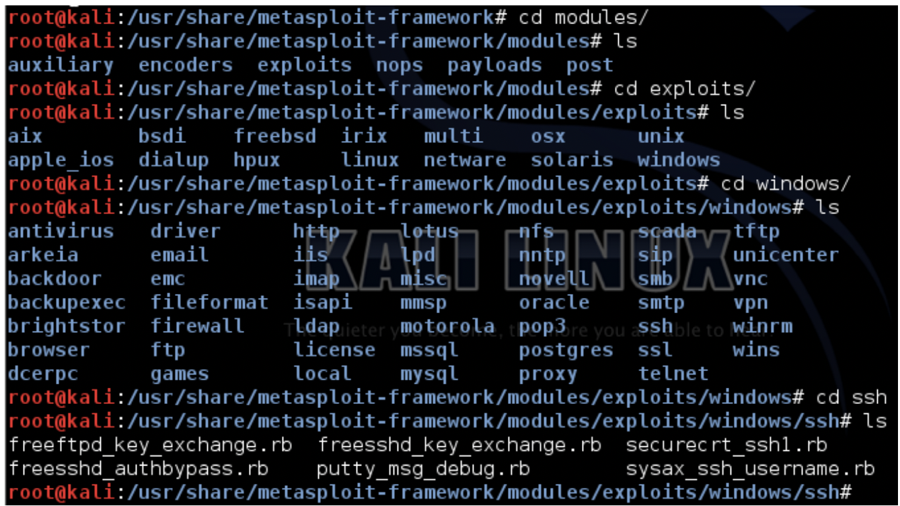

MeTaSPLoiT

Perill!
No proveu açò fora d'ún entorn didáctic. Podria ser un delicte.
MÓDULOS
- Auxiliary: Permite la interacción de herramientas externas como pueden ser:** Escaners de vulnerabilidades, Sniffers, etc... con el framework de Metasploit
- Encoders: Proporciona algoritmos par codificar y ofuscar los payloads que utilizaremos tras haber tenido éxito el exploit
- Exploits: Aquí se encuentran todos los exploits disponibles en el “framework” para conseguir acceso a los diferentes SO’s
- Payloads: Nos proporciona gran cantidad de códigos “maliciosos” que podremos ejecutar una vez haya tenido éxito el “exploit”
- Post: Nos proporciona funcionalidades para la fase de “post” explotación como recolección de información, etc...
- Nops: Nos permite realizar u obtener operaciones NOP para evadir antivirus, IDS, etc...
Estructura de directorios (Importante)
Modules/exploits/<OS/Platform>/<Protocol/Service/Local...>/file.rb

INTRO A METASPLOIT FRAMEWORK
- Lanzamos la orden msfconsole desde el terminal que nos devolverá el identificador msf > para introducir las órdenes.
- Previamente será bueno actualizarlo: root@kali.~# msfupdate
- La consola MSF es como un mini-sistema de archivos donde las carpetas que cuelgan de él se encuentran físicamente en la ruta dónde se ha instalado el framework. Ejemplos:
- Los exploits de Windows esta en la ruta exploit/windows/<..>
- Los módulos auxiliares en auxiliary/<...>
- Los encoders en encoders/
COMANDOS BÁSICOS
Órdenes de ayuda
* msf > `help –` lista las órdenes separadas en dos listados:
* Órdenes del núcleo de msf
* Órdenes de interacción con bases de datos.
* -h permite obtener información de órdenes concretas.
Orden de búsqueda
- msf >
help –lista las órdenes separadas en dos listados:* Órdenes del núcleo de msf * Órdenes de interacción con bases de datos. * -h permite obtener información de órdenes concretas.
Orden de búsqueda
Útil para la búsqueda de módulos por alguna característica o determinar si elframework esta actualizado.
* msf > search -h
- info – aporta información sobre el módulo seleccionado bien con la orden use (que permite seleccionar un módulo), bien especificando la ruta:
- msf >
use exploit/multi/handler - msf >
info - msf >
info <ruta>
- msf >
- show – muestra las diferentes opciones para los módulos del framework, exploits,payload, encoders, nops, etc.
Órdenes de interacción y configuración
- back – permite salir del módulo (contrario a use)
- set y setg – asignan valores a variables: set para un módulo, setg para en contexto del framework.
- unset y unsetg – desasignan valores a parámetros o variables
- connect – permite conectarnos a otra máquina para su gestión o administración dado la dirección IP y el puerto.
- irb – permite ejecutar un interprete de Ruby para el framework para ejercutar órdenes y scripts.
- load, unload y loadpath – load/unload especifica el plugins a cargar/descargar, o directorio donde se almacenan (loadpath).
-
check – permite verificar si un sistema es vulnerable a cierta vulnerabilidad antes de lanzar el script.
-
exploit – lanza el código malicioso, una vez seleccionado y configurado el módulo, sobre la máquina, o prepara el entorno para vulnerar la máquina. Devuelve el control mediante un shell o un Meterpreter (Meta-interprete: payload que permite cargar e inyectar en un programa del sistema atacado las extensiones que hemos desarrollado en formato .dll).
-
Opciones: * -j ejecutar exploit en segundo plano * -z no se interactúa con la sesión tras explotación exitosa * -e lanza el paylod con la codificación establecida
- sessions – las shells obtenidas en sistemas vulnerados se organizan por sesiones. Esta orden permite ver las sesiones que tenemos abiertas:
- -l lista sesiones disponibles
- -v muestra información extra
- -s script ejecuta script sobre todas las sesiones del Meterpreter
- -K finaliza todas las sesiones abiertas
- -c
ejecutar órdenes sobre sesiones abiertas del meterpreter - -u permite actualizar la shell remota tipo Win32 a un meterpreter especificando la sesión.
- -i especifican sesión con la que interaccionar.
- resource – permite la carga de un archivo (.rc) con acciones especificas sobre el framework para automatizar tareas.
- makerc – almacena en un archivo el historial de órdenes y acciones que se han realiza en la sesión en curso (nombre-usuario en el directorio .msfX)
- save – aporta persistencia a la configuración del entorno, especialmente es test complicados y largos (archivo config en .msfX).
- jobs – muestra/finaliza los módulos en ejecución en segundo plano
- run – permite ejecutar un módulo auxiliar cargado en el contexto de la consola.
- route – enruta sockets a sesiones (similar al route de Linux). Útil en pivoting